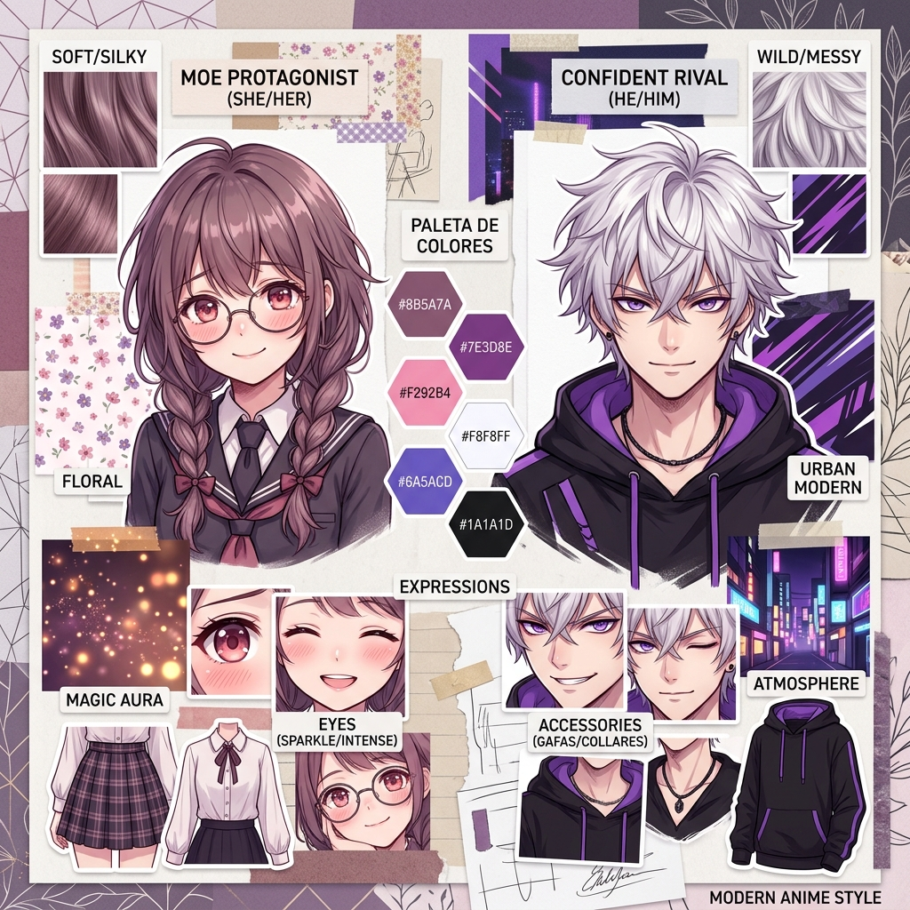

Hojas de Modelo (Concept Art)

Anna: Estudiante reservada y metódica. El diseño enfatiza su rigidez estructural con trenzas ordenadas, gafas y uniforme conservador. El sutil degradado púrpura insinúa su mundo interior sensible.

Sora: Joven urbano, libre y caótico. Su diseño streetwear holgado y cabello desordenado contrastan con Anna. Comparte el acento púrpura en ojos y sudadera, unificando visualmente la conexión emocional de la pareja.
Storyboard: Paneles Técnicos

Panel 1: Establecimiento de la atmósfera fría y melancólica. Plano general de la avenida urbana bajo la lluvia intensa, iluminada por luces de neón borrosas, introduciendo la soledad de Anna.

Panel 2: Un momento clave de la narrativa. Se detalla un elemento de tensión, posiblemente el reloj de bolsillo o la aproximación del autobús, rompiendo la inmovilidad de la escena inicial.
Moodboard / Inspiración Visual

Moodboard: Referencia visual para la paleta de colores y la atmósfera. Define los tonos azules y morados saturados, la textura de la lluvia intensa sobre el asfalto y el metal del paradero, y el contraste emocional entre la soledad fría y los recuerdos cálidos.